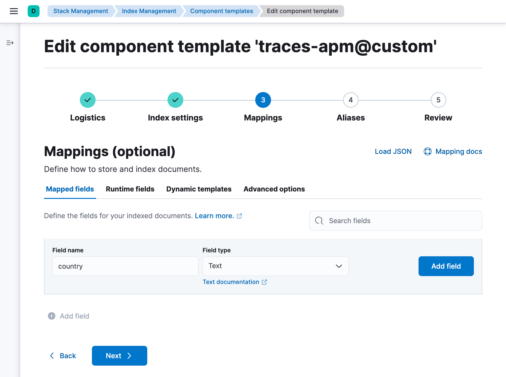
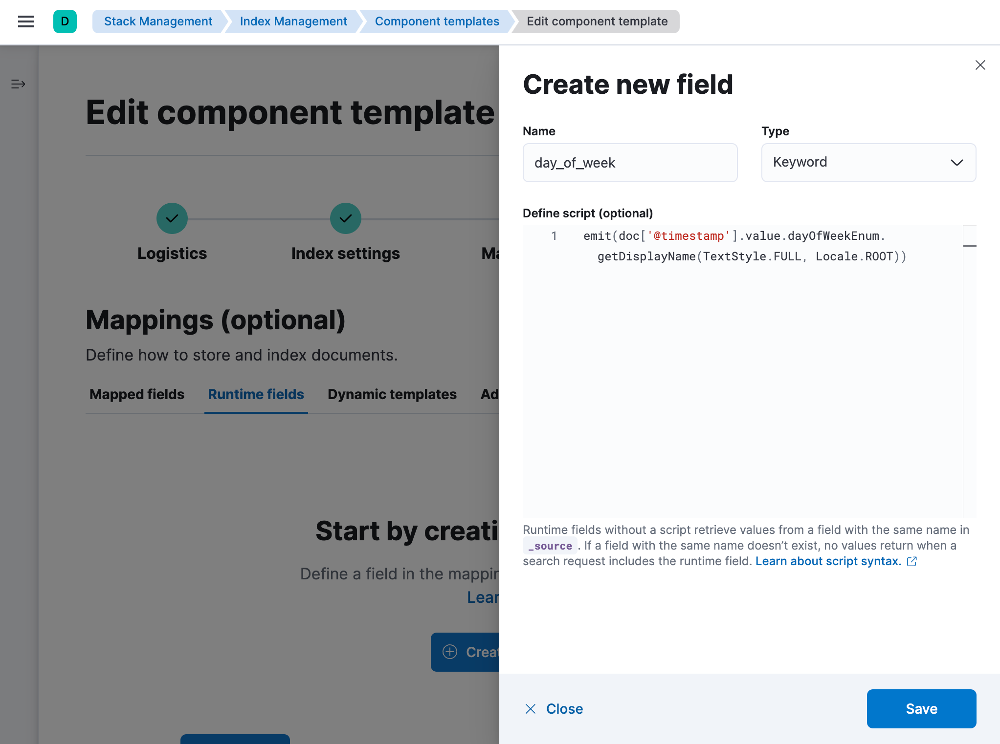

View the Elasticsearch index template
editIndex templates are used to configure the backing indices of data streams as they are created. These index templates are composed of multiple component templates—reusable building blocks that configure index mappings, settings, and aliases.
The default APM index templates can be viewed in Kibana.
Navigate to Stack Management → Index Management → Index Templates, and search for apm.
Select any of the APM index templates to view their relevant component templates.
Edit the Elasticsearch index template
editCustom index mappings may conflict with the mappings defined by the APM integration and may break the APM integration and APM app in Kibana. Do not change or customize any default mappings.
When you install the APM integration, Fleet creates a default @custom component template for each data stream.
You can edit this @custom component template to customize your Elasticsearch indices.
First, determine which data stream you’d like to edit. Then, open Kibana and navigate to Stack Management → Index Management → Component Templates.
Custom component templates are named following this pattern: <name_of_data_stream>@custom.
Search for the name of the data stream, like traces-apm, and select its custom component template.
In this example, that’d be, traces-apm@custom.
Then click Manage → Edit.
Add any custom metadata, index settings, or mappings.
Index settings
editIn the Index settings step, you can specify custom index settings. For example, you could:
- Customize the index lifecycle policy applied to a data stream. See custom index lifecycle policies for a walk-through.
-
Change the number of shards per index. Specify the number of primary shards:
{ "settings": { "number_of_shards": "4", } } -
Change the number of replicas per index. Specify the number of replica shards:
{ "index": { "number_of_replicas": "2" } }
Mappings
editMapping is the process of defining how a document, and the fields it contains, are stored and indexed. In the Mappings step, you can add custom field mappings. For example, you could:
-
Add custom field mappings that you can index on and search. In the Mapped fields tab, add a new field including the field type:
 -
Add a runtime field that is evaluated at query time. In the Runtime fields tab, click Create runtime field and provide a field name, type, and optionally a script:

Roll over the data stream
editChanges to component templates are not applied retroactively to existing indices.
For changes to take effect, you must create a new write index for the data stream.
This can be done with the Elasticsearch Rollover API.
For example, to roll over the traces-apm-default data stream, run:
POST /traces-apm-default/_rollover/